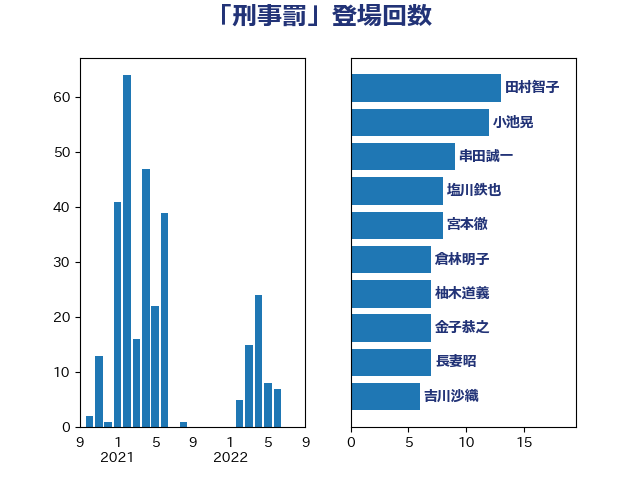

単語「刑事罰」

| 田村智子 | 日本共産党 | 13 回 |
| 小池晃 | 日本共産党 | 12 回 |
| 串田誠一 | 日本維新の会 | 9 回 |
| 塩川鉄也 | 日本共産党 | 8 回 |
| 宮本徹 | 日本共産党 | 8 回 |
| 倉林明子 | 日本共産党 | 7 回 |
| 柚木道義 | 立憲民主党 | 7 回 |
| 金子恭之 | 自由民主党 | 7 回 |
| 長妻昭 | 立憲民主党 | 7 回 |
| 吉川沙織 | 立憲民主党 | 6 回 |
| 田村憲久 | 自由民主党 | 6 回 |
| 美延映夫 | 日本維新の会 | 6 回 |
| 階猛 | 立憲民主党 | 6 回 |
| 伊佐進一 | 公明党 | 5 回 |
| 国光あやの | 自由民主党 | 5 回 |
| 白石洋一 | 立憲民主党 | 5 回 |
| 野上浩太郎 | 自由民主党 | 5 回 |
| 嘉田由紀子 | 無所属 | 4 回 |
| 山添拓 | 日本共産党 | 4 回 |
| 打越さく良 | 立憲民主党 | 4 回 |
| 西村康稔 | 自由民主党 | 4 回 |
| 小沼巧 | 立憲民主党 | 3 回 |
| 伊藤孝恵 | 国民民主党 | 2 回 |
| 吉川赳 | 無所属 | 2 回 |
| 堀場幸子 | 日本維新の会 | 2 回 |
| 塩田博昭 | 公明党 | 2 回 |
| 宮内秀樹 | 自由民主党 | 2 回 |
| 小林鷹之 | 自由民主党 | 2 回 |
| 松本剛明 | 自由民主党 | 2 回 |
| 矢倉克夫 | 公明党 | 2 回 |
| 藤岡隆雄 | 立憲民主党 | 2 回 |
| 辻元清美 | 立憲民主党 | 2 回 |
| 青柳仁士 | 日本維新の会 | 2 回 |
| 中島克仁 | 立憲民主党 | 1 回 |
| 中西祐介 | 自由民主党 | 1 回 |
| 井上信治 | 自由民主党 | 1 回 |
| 前川清成 | 日本維新の会 | 1 回 |
| 古川禎久 | 自由民主党 | 1 回 |
| 吉田統彦 | 立憲民主党 | 1 回 |
| 大口善徳 | 公明党 | 1 回 |
| 寺田学 | 立憲民主党 | 1 回 |
| 山口那津男 | 公明党 | 1 回 |
| 岸田文雄 | 自由民主党 | 1 回 |
| 平井卓也 | 自由民主党 | 1 回 |
| 後藤茂之 | 自由民主党 | 1 回 |
| 徳永エリ | 立憲民主党 | 1 回 |
| 斎藤嘉隆 | 立憲民主党 | 1 回 |
| 木原誠二 | 自由民主党 | 1 回 |
| 杉尾秀哉 | 立憲民主党 | 1 回 |
| 杉田水脈 | 自由民主党 | 1 回 |
| 松原仁 | 立憲民主党 | 1 回 |
| 林芳正 | 自由民主党 | 1 回 |
| 森本真治 | 立憲民主党 | 1 回 |
| 泉健太 | 立憲民主党 | 1 回 |
| 浅野哲 | 国民民主党 | 1 回 |
| 浜田聡 | NHK党 | 1 回 |
| 浮島智子 | 公明党 | 1 回 |
| 漆間譲司 | 日本維新の会 | 1 回 |
| 熊野正士 | 公明党 | 1 回 |
| 玉木雄一郎 | 国民民主党 | 1 回 |
| 石橋通宏 | 立憲民主党 | 1 回 |
| 福島みずほ | 社会民主党 | 1 回 |
| 篠原豪 | 立憲民主党 | 1 回 |
| 菅義偉 | 自由民主党 | 1 回 |
| 萩生田光一 | 自由民主党 | 1 回 |
| 葉梨康弘 | 自由民主党 | 1 回 |
| 蓮舫 | 立憲民主党 | 1 回 |
| 赤嶺政賢 | 日本共産党 | 1 回 |
| 足立康史 | 日本維新の会 | 1 回 |
| 逢坂誠二 | 立憲民主党 | 1 回 |
| 阿部知子 | 立憲民主党 | 1 回 |